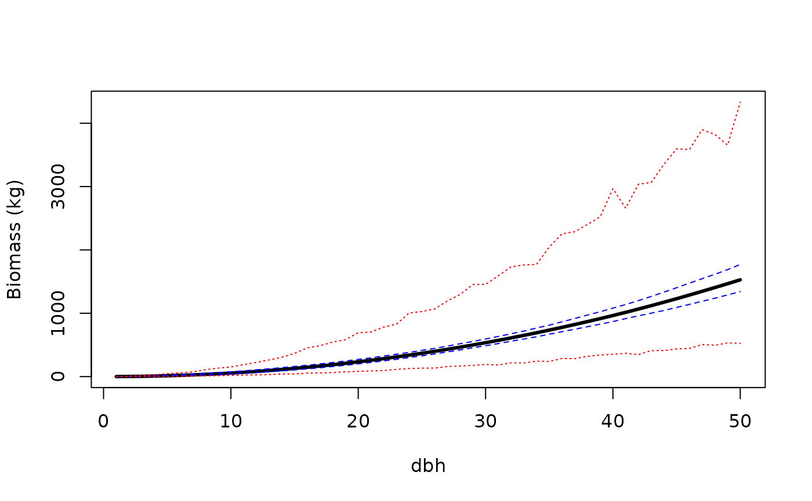
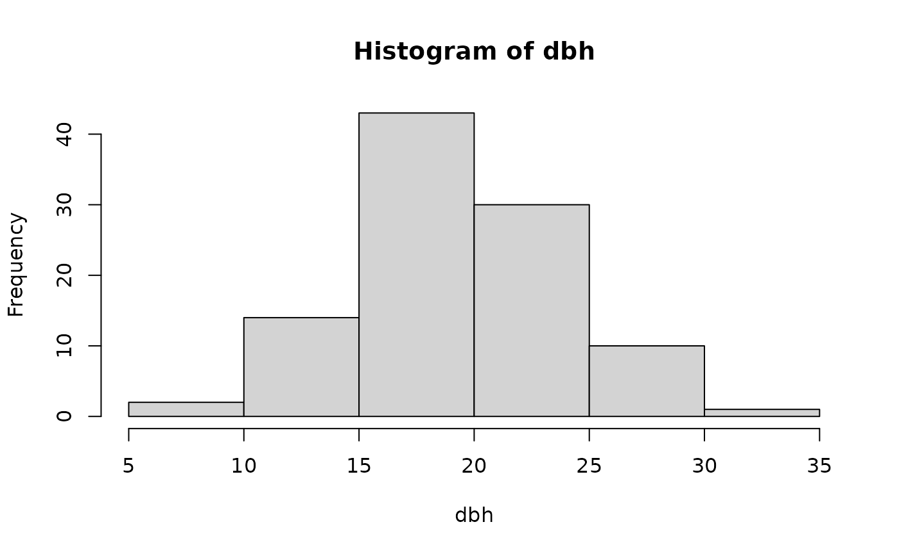
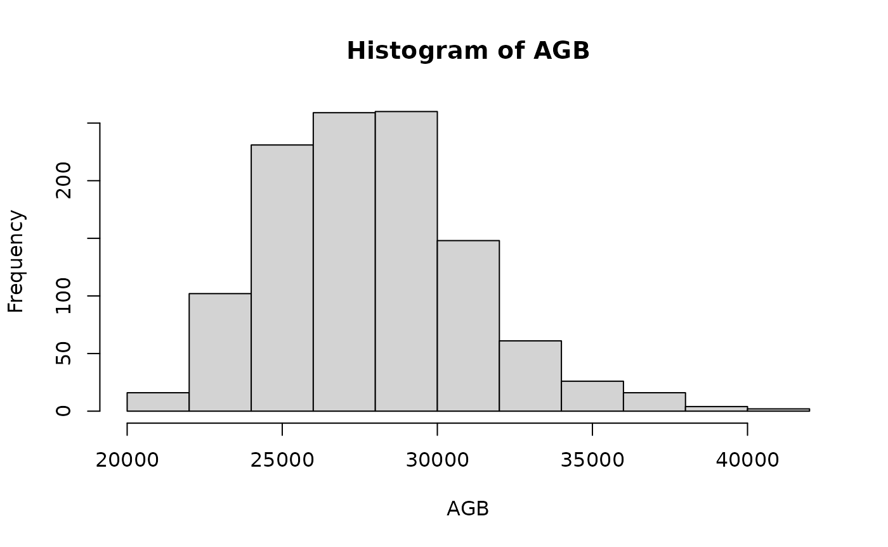

AllomVignette.RmdOnly needs to be done the first time
library(devtools)
install_github("PecanProject/pecan",subdir="modules/allometry")
library(PEcAn.allometry)
## define the Plant Functional Types you want to fit based on USDA acronyms and USFS species codes (spcd)
## can involve one or many species
## multiple PFTs can be fit at once by putting them in a list
## Note that the name used in the PFT list defines the name that the code will match against when making predictions for new individuals
pfts = list(FAGR = data.frame(spcd=531,acronym="FAGR"))
## example of a PFT with multiple species (LH = late hardwood)
## note that if you're just using Jenkins the acronym column is optional
pfts = list(LH = data.frame(spcd = c(531,318),acronym=c("FAGR","ACSA3")))Note the side effects of this function are that it will create two files in your working directory for every PFT and component pair, a pdf file of diagnostics and a RData file saving the full output. These files will be named based on the PFT and the component.
The return from this function will be a summary table of statistics. The function will actually run two variants of the model, a “global” modelthat fits a single equation to all equations and a ‘hierarchical’ model that accounts for the variability among equations. This function also print out DIC statistics on which fit was better (lowest score wins): DIC is the hierarchical model, DICg is the global model.
allom.stats = AllomAve(pfts,ngibbs=500)## [1] "writing output to" "/pecan/modules/allometry/vignettes"
## $spcd
## [1] 531 318
##
## $acronym
## [1] "FAGR" "ACSA3"
##
## [[3]]
## [1] 6## Warning in nu(allom$parm$Component.ID): NAs introduced by coercion## [1] "Dropping allom rows: "
## | | | 0%
## [1] "Dropping allom rows: "
## | | | 0%
## [1] "Dropping allom rows: "
## | | | 0%
## [1] "saving MCMC output to"
## [2] "/pecan/modules/allometry/vignettes/Allom.LH.6.Rdata"
## [1] "saving diagnostic graphs to"
## [2] "/pecan/modules/allometry/vignettes/Allom.LH.6.MCMC.pdf"## [1] "DIC" "395.702602161238" "pD" "243.992640068177"
## [1] "DICg" "443.982251804958" "pDg" "210.163584033461"If you want to run with a response variable other than the default (e.g. components = 6; stem biomass), look up the relevant component IDs in data(allom.components). The default component is 3 (total aboveground biomass). Note that if you specify multiple PFTs (as a list) and multiple components (as a vector) then AllomAve will generate allometries for all PFT x component combinations
## [1] "writing output to" "/pecan/modules/allometry/vignettes"
## $spcd
## [1] 531 318
##
## $acronym
## [1] "FAGR" "ACSA3"
##
## [[3]]
## [1] 3## Warning in nu(allom$parm$Component.ID): NAs introduced by coercion## [1] "Dropping allom rows: "
## | | | 0%
## [1] "Dropping allom rows: "
## | | | 0%
## [1] "Dropping allom rows: "
## | | | 0%
## [1] "saving MCMC output to"
## [2] "/pecan/modules/allometry/vignettes/Allom.LH.3.Rdata"
## [1] "saving diagnostic graphs to"
## [2] "/pecan/modules/allometry/vignettes/Allom.LH.3.MCMC.pdf"## [1] "DIC" "402.047325187002" "pD" "186.922750364588"
## [1] "DICg" "429.999526471231" "pDg" "184.583630096555"
## $spcd
## [1] 531 318
##
## $acronym
## [1] "FAGR" "ACSA3"
##
## [[3]]
## [1] 6## Warning in nu(allom$parm$Component.ID): NAs introduced by coercion## [1] "Dropping allom rows: "
## | | | 0%
## [1] "Dropping allom rows: "
## | | | 0%
## [1] "Dropping allom rows: "
## | | | 0%
## [1] "saving MCMC output to"
## [2] "/pecan/modules/allometry/vignettes/Allom.LH.6.Rdata"
## [1] "saving diagnostic graphs to"
## [2] "/pecan/modules/allometry/vignettes/Allom.LH.6.MCMC.pdf"## [1] "DIC" "385.928724345987" "pD" "226.548160137734"
## [1] "DICg" "489.454886645187" "pDg" "251.131001254801"
allom.fit = load.allom(getwd())
dbh = 1:50
pred = allom.predict(allom.fit,dbh = dbh,pft = "LH",component = 3,use = "Bg",interval = "prediction")
conf = allom.predict(allom.fit,dbh = dbh,pft = "LH",component = 3,use = "Bg",interval = "confidence")
PI = apply(pred,2,quantile,c(0.025,0.5,0.975),na.rm=TRUE)
CI = apply(conf,2,quantile,c(0.025,0.5,0.975),na.rm=TRUE)
plot(dbh,CI[2,],type='l',lwd=3,ylim=range(PI),ylab="Biomass (kg)")
lines(dbh,CI[1,],lty=2,col="blue")
lines(dbh,CI[3,],lty=2,col="blue")
lines(dbh,PI[1,],lty=3,col="red")
lines(dbh,PI[3,],lty=3,col="red")

stand = allom.predict(allom.fit,dbh = dbh,pft = "LH",component = 3,use = "Bg",interval = "prediction")
AGB = apply(stand,1,sum)
hist(AGB)